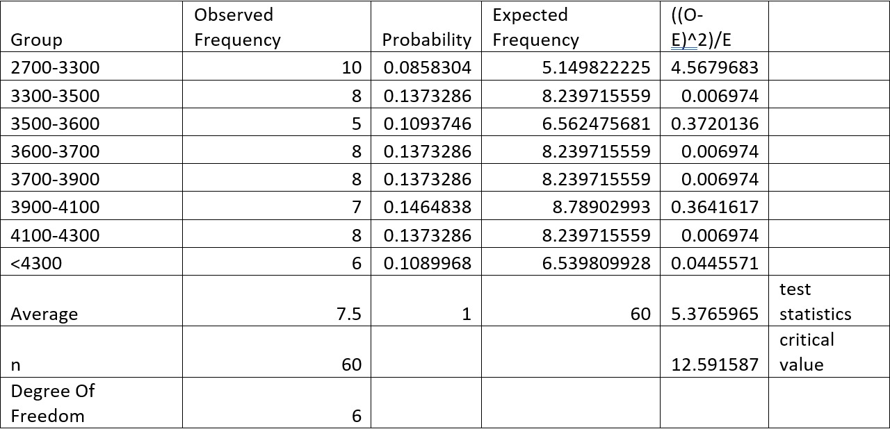
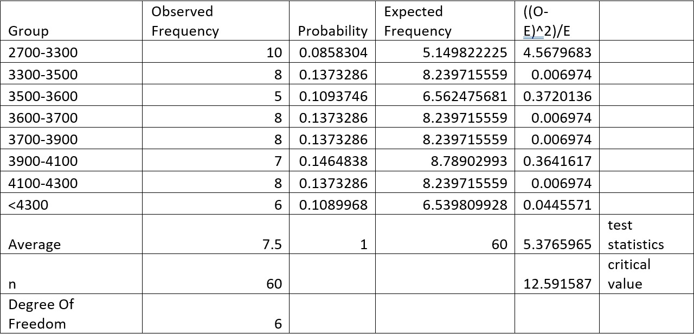

Chi-Square Goodness-Of-Fit Test
In the first task, monthly hospital admission data from Sengkang General Hospital (2019–2023) is analyzed using excel to test whether the number of admissions followed a Poisson distribution. Chi-Square Goodness-of-Fit is tested at a 5% significance level which helped determine if admissions occurred randomly at a consistent average rate or if other factors influenced the data.
 
